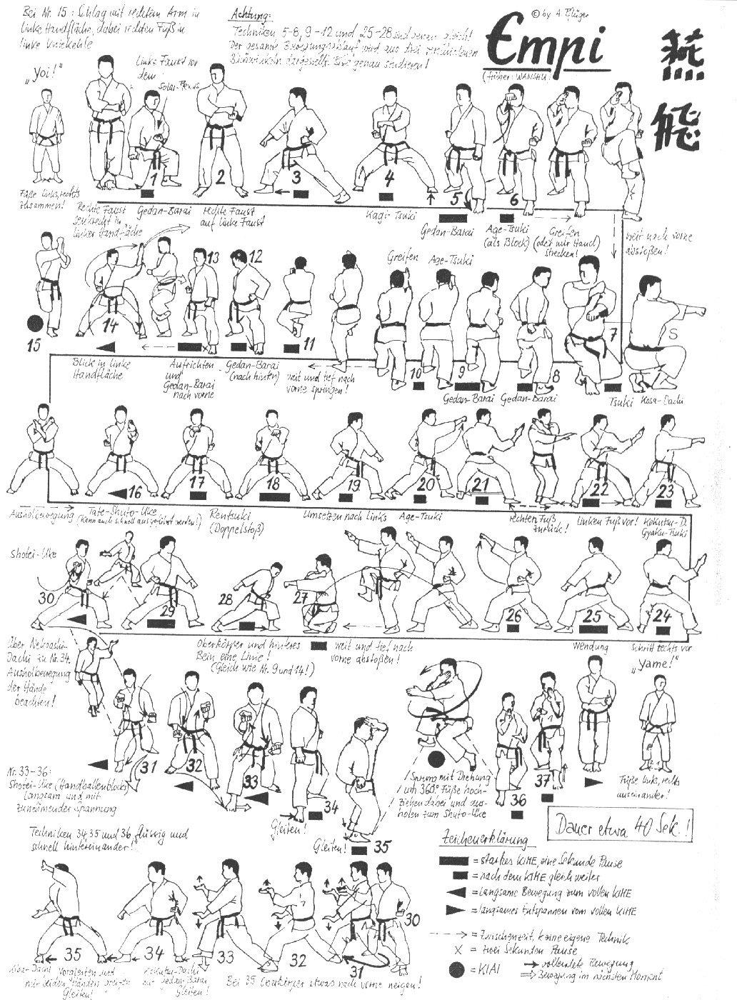

Empi

- Yoi andando in Eisoku Dachi con le ginocchia leggermente piegate porto i pugni al fianco sinistro, tenendo il pugno destro verticale e appoggiato sul sinistro.
- Carico all'orecchio sinistro entrambe le mani ed eseguo Morote Gedan Barai destro appoggiando quasi il ginocchio destro a terra.
- Ritorno in Hachiji Dachi con i pugni al fianco sinistro.
- Sposto la gamba a destra di 90° scendo in Zenkutsu Dachi ed eseguo Gedan Barai destro.
- Richiamo la gamba sinistra, vado in Kiba Dachi ed eseguo Hidari Kagi Tzuki destro.
- Avanzo in Zenkutsu Dachi sinistro eseguendo Gedan Barai sinistro.
- Tenendo la posizione eseguo Migi Jodan Age Tzuki.
- Apro la mano con una leggera rotazione simulando una presa e riportandola in Yohon Nukite palmo parallelo al terreno.
- Mae Hittsui Geri destro lungo e richiamo la gamba sinistra andando in Kosa Dachi, contemporaneamente eseguo Soto Uke destro all’orecchio e Gedan Tzuki sinistro.
- Mawatte allargando la gamba sinistra in Zenkutsu Dachi ed eseguo Ushiro Gedan Barai destro.
- Riporto il busto in avanti e ripeto la sequenza Gedan Barai sinistro - Age Tzuki destro – presa con rotazione del polso.
- Mae Hittsui Geri destro lungo e richiamo la gamba sinistra andando in Kosa Dachi, contemporaneamente eseguo Soto Uke destro all’orecchio e Gedan Tzuki sinistro.
- Mawatte allargando la gamba sinistra in Zenkutsu Dachi ed eseguo Ushiro Gedan Barai destro.
- Riporto il busto in avanti ed eseguo Gedan Barai sinistro.
- Sempre in Gedan Barai apro la mano in Nukite.
- Eseguo contemporaneamente Hidari Shinobi Ashi e Hidari Jodan Haito Uchi Uke a 45° tenendo lo sguardo sulla mano sinistra.
- Eseguo Ude Uchi destro senza spostare la mano sinistra in posizione della gru (Tsuru Dachi). Kiai.
- Allargo la gamba destra scendendo in Kiba Dachi ed eseguo Tate Shuto sinistro.
- Mantenendo la posizione eseguo Ren Tzuki Chudan.
- Rotazione verso sinistra di 90° ed eseguo Hidari Gedan Barai.
- Avanzo in Migi Kokutzu Dachi Shuto Uke.
- Richiamo il piede destro e avanzo con il sinistro (Hiki Ayumi Ashi) in Hidari Kokutzu Dachi Shuto Uke.
- Tzuki Chudan a 45° destro verso sinistra.
- Mawatte in Hidari Gedan Barai.
- Tenendo la posizione eseguo Migi Jodan Age Tzuki.
- Apro la mano con una leggera rotazione simulando una presa e riportandola in Yohon Nukite palmo parallelo al terreno.
- Hittsui Geri lungo in avanti e avvicino la gamba sinistra andando in Kosa Dachi e contemporaneamente eseguo Soto Uke destro all’orecchio e Gedan Tzuki sinistro.
- Mawatte allargando la gamba sinistra in Zenkutsu Dachi ed eseguo Ushiro Gedan Barai destro sulla gamba destra.
- Ruotando il busto in avanti eseguo Hidari Gedan Barai.
- Con movimento circolare verticale portando indietro il braccio destro eseguo Migi frontale a 45°.
- Spostamento della posizione di 45° verso destra e contemporaneamente inverto le braccia eseguendo Hidari Teisho Uke Chudan e Migi Teisho Uke Gedan con soluzione di continuità, incrocio nuovamente gli avambracci invertendo nuovamente le braccia ed eseguendo Migi Teisho Uke Chudan e Hidari Teisho Uke Gedan.
- Avanzo in Zenkutsu Dachi eseguendo Hidari Teisho Uke Chudan e Migi Teisho Uke Gedan.
- Avanzo in Zenkutsu Dachi eseguendo Migi Teisho Uke Chudan e Hidari Teisho Uke Gedan.
- Avanzo in Migi Kokutsu Dachi Gedan Barai.
- Tsuri Ashi destro ed eseguo Age Uke Sinistro con mano aperta e Yohon Nukite destro dorso parallelo al pavimento.
- Ushiro Tobi di 360° con atterraggio in Migi Shuto Uke. Kiai.
- Arretrando un passo in Hidari Kokutzu Dachi Shuto Uke.
- Richiamo la gamba sinistra e mi riporto nella posizione iniziale.
- Yame! Allargo la gamba destra e torno in posizione di Yoi!